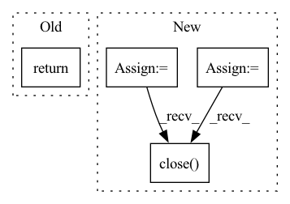

Pattern ID :2357
Before Change
path=path + vid_name,
**kwargs)
if None in rst_dict:
return
// ppg, sbp, dbp, hr
// if preprocess_type in ["DeepPhys", "PhysNet", "PhysNet_LSTM"]:
return_dict[path.replace("/", "") + str(kwargs["flip_flag"])] = {After Change
save_root_path = kwargs["save_root_path"]
dataset_name = kwargs["dataset_name"]
preprocessed_label = label_preprocess(preprocess_type=preprocess_type,
path=path + ground_truth_name,
**kwargs)
raw_video = video_preprocess(preprocess_type=preprocess_type,
path=path + vid_name,
**kwargs)
if None in raw_video:
return
path = path.split("/")
add_info = ""
if dataset_name == "VIPL_HR":
add_info = path[-3] + "/" + path[-2] + "/"
dir_path = save_root_path + "/" + dataset_name + "/" + preprocess_type + "/" + add_info
if not os.path.isdir(dir_path):
mkdir_p(dir_path)
data = h5py.File(dir_path + path[-1] + ".hdf5","w")
data.create_dataset("raw_video",data=raw_video)
data.create_dataset("preprocessed_label", data=preprocessed_label[0])
data.create_dataset("preprocessed_hr",data=preprocessed_label[1])
data.close()
def chunk_preprocessing(preprocess_type,In pattern: SUPERPATTERN
Frequency: 3
Non-data size: 4
Instances Fragment ID: 9986008
Project Name: tvs-ai/pytorch_rppgs
Commit Name: dcf5888afdf58407808ef89276c597ae7489ca2e
Time: 2023-05-12
Author: spicyyeol@gmail.com
File Name: rppg/preprocessing/dataset_preprocess.py
M Class Name: AnonimousClass
N Class Name: AnonimousClass
M Method Name: preprocess_Dataset(5)
N Method Name: preprocess_Dataset(5)
M Parent Class:
N Parent Class:
M File Name: rppg/preprocessing/dataset_preprocess.py
N File Name: rppg/preprocessing/dataset_preprocess.py
M Start Line: 127
M End Line: 145
N Start Line: 138
N End Line: 166
Before Change
if _use_new_zipfile_serialization:
with _open_zipfile_writer(f) as opened_file:
_save(obj, opened_file, pickle_module, pickle_protocol)
return
with _open_file_like(f, "wb") as opened_file:
_legacy_save(obj, opened_file, pickle_module, pickle_protocol)
After Change
_legacy_save(obj, opened_file, pickle_module, pickle_protocol)
if is_compressed:
f_pickle = ""
if isinstance(f, str):
f_pickle = f
elif hasattr(f, "flush") and hasattr(f, "write"):
f_pickle = f.name
fp = tarfile.open(f_pickle + "_", "w")
fp.add(f_pickle)
fp.close()
os.remove(f_pickle)
os.rename(f_pickle + "_", f_pickle)
Fragment ID: 9986042
Project Name: allanyiin/trident
Commit Name: bcdf7620a1a14d84309f2b5340cbe3cdd22f286e
Time: 2020-08-30
Author: allan@asiaminer.com.tw
File Name: trident/backend/tensorflow_serialization.py
M Class Name: AnonimousClass
N Class Name: AnonimousClass
M Method Name: save(5)
N Method Name: save(5)
M Parent Class:
N Parent Class:
M File Name: trident/backend/tensorflow_serialization.py
N File Name: trident/backend/tensorflow_serialization.py
M Start Line: 393
M End Line: 398
N Start Line: 393
N End Line: 412
Before Change
stacked_maps[map_index, :, :, :] = spatio_temporal_map
map_index += 1
return True, stacked_maps.astype(np.uint8).transpose((1, 0, 2))After Change
min_max_scaler = preprocessing.MinMaxScaler()
detector = get_haarcascade()
eye_detector = get_eye_haarcascade()
pbar = tqdm(total=num_frames, position=0, leave=True, desc=video_path+" Detecting Faces")
// First we process all the frames and then work with sliding window to save repeated processing for the same frame index
for idx, frame in enumerate(frames):
// spatio_temporal_map = np.zeros((fr, 25, 3))
"""
Preprocess the Image
Step 1: Use cv2 face detector based on Haar cascades
Step 2: Crop the frame based on the face co-ordinates (we need to do 160%)
Step 3: Downsample the face cropped frame to output_shape = 36x36
"""
faces = detector.detectMultiScale(frame, 1.3, 5)
if len(faces) is not 0:
(x, y, w, d) = faces[0]
frame_cropped = frame[y:(y + d), x:(x + w)]
// eyes = eye_detector.detectMultiScale(frame_cropped, 1.2, 3)
// if len(eyes) > 0:
// // for having the same radius in both eyes
// (eye_x, eye_y, eye_w, eye_h) = eyes[0]
// eye_radius = (eye_w + eye_h) // 5
// mask = np.ones(frame_cropped.shape[:2], dtype="uint8")
// for (ex, ey, ew, eh) in eyes[:2]:
// eye_center = (ex + ew // 2, ey + eh // 2)
// // if eye_radius
// cv2.circle(mask, eye_center, eye_radius, 0, -1)
// // eh = int(0.8*eh)
// // ew = int(0.8*ew)
// // cv2.rectangle(mask, (ex, ey), (ex+ew, ey+eh), 0, -1)
//
// frame_masked = cv2.bitwise_and(frame_cropped, frame_cropped, mask=mask)
// else:
// frame_masked = frame_cropped
// // plot_image(frame_masked)
frame_masked = frame_cropped
else:
// The problemis that this doesn"t get cropped :/
// (x, y, w, d) = (308, 189, 215, 215)
// frame_masked = frame[y:(y + d), x:(x + w)]
// print("face detection failed, image frame will be masked")
mask = np.zeros(frame.shape[:2], dtype="uint8")
frame_masked = cv2.bitwise_and(frame, frame, mask=mask)
// plot_image(frame_masked)
// frame_cropped = frame[y:(y + d), x:(x + w)]
try:
// frame_resized = cv2.resize(frame_masked, output_shape, interpolation=cv2.INTER_CUBIC)
frame_resized = cv2.cvtColor(frame_masked, cv2.COLOR_BGR2YUV)
except:
print("\n--------- ERROR! -----------\nUsual cv empty error")
print(f"Shape of img1: {frame.shape}")
// print(f"bbox: {bbox}")
print(f"This is at idx: {idx}")
return False, None
// exit(666)
processed_frames.append(frame_resized)
pbar.update(1)
pbar.close()
// roi_blocks = chunkify(frame_resized)
// for block_idx, block in enumerate(roi_blocks):
// avg_pixels = cv2.mean(block)
// processed_maps[idx, block_idx, 0] = avg_pixels[0]
// processed_maps[idx, block_idx, 1] = avg_pixels[1]
// processed_maps[idx, block_idx, 2] = avg_pixels[2]
pbar = tqdm(total=num_maps, position=0, leave=True, desc=video_path+" Making STMAPS")
// At this point we have the processed maps from all the frames in a video and now we do the sliding window part.
for start_frame_index in range(0, num_frames, sliding_window_stride):
end_frame_index = start_frame_index + clip_size
if end_frame_index > num_frames:
break
// // print(f"start_idx: {start_frame_index} | end_idx: {end_frame_index}")
spatio_temporal_map = np.zeros((clip_size, 25, 3))
//
// spatio_temporal_map = processed_maps[start_frame_index:end_frame_index, :, :]
for idx, frame in enumerate(processed_frames[start_frame_index:end_frame_index]):
roi_blocks = chunkify(frame)
for block_idx, block in enumerate(roi_blocks):
avg_pixels = cv2.mean(block)
spatio_temporal_map[idx, block_idx, 0] = avg_pixels[0]
spatio_temporal_map[idx, block_idx, 1] = avg_pixels[1]
spatio_temporal_map[idx, block_idx, 2] = avg_pixels[2]
for block_idx in range(spatio_temporal_map.shape[1]):
// Not sure about uint8
fn_scale_0_255 = lambda x: (x * 255.0).astype(np.uint8)
scaled_channel_0 = min_max_scaler.fit_transform(spatio_temporal_map[:, block_idx, 0].reshape(-1, 1))
spatio_temporal_map[:, block_idx, 0] = fn_scale_0_255(scaled_channel_0.flatten())
scaled_channel_1 = min_max_scaler.fit_transform(spatio_temporal_map[:, block_idx, 1].reshape(-1, 1))
spatio_temporal_map[:, block_idx, 1] = fn_scale_0_255(scaled_channel_1.flatten())
scaled_channel_2 = min_max_scaler.fit_transform(spatio_temporal_map[:, block_idx, 2].reshape(-1, 1))
spatio_temporal_map[:, block_idx, 2] = fn_scale_0_255(scaled_channel_2.flatten())
stacked_maps[map_index, :, :, :] = spatio_temporal_map
map_index += 1
pbar.update(1)
pbar.close()
(idx, w, h, c) = stacked_maps.shape
stacked_maps = stacked_maps.reshape((idx, h, w, c))
Fragment ID: 9985989
Project Name: tvs-ai/pytorch_rppgs
Commit Name: fb7669c43864d13d11528ad55745d21e2ce0635e
Time: 2022-10-19
Author: 57242033+najy97@users.noreply.github.com
File Name: utils/image_preprocess.py
M Class Name: AnonimousClass
N Class Name: AnonimousClass
M Method Name: RhythmNet_preprocessor(2)
N Method Name: RhythmNet_preprocessor(2)
M Parent Class:
N Parent Class:
M File Name: utils/image_preprocess.py
N File Name: utils/image_preprocess.py
M Start Line: 984
M End Line: 1102
N Start Line: 1004
N End Line: 1109